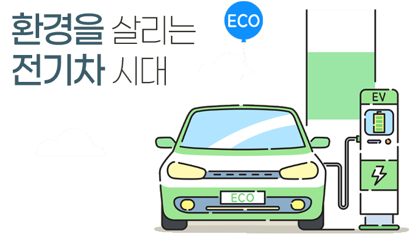

1
전기차의 작동원리
전기차는 고전압 배터터리에서 전기에너지를 모터로 공급하여 구동력을 발생시키는 차량으로, 화석연료를 전혀 사용하지 않는 무공해 차량입니다.

1.내연기관차와 달리 엔진이 없이 배터리와 모터만으로 구동
2.엔진이 없으므로 대기오염물질과 온실가스를 배출하지 않음
3.배터리 용량에 따라 주행가능 거리에 차이가 있음
2.엔진이 없으므로 대기오염물질과 온실가스를 배출하지 않음
3.배터리 용량에 따라 주행가능 거리에 차이가 있음
전기차 내부구조
외부전원, 급속충전기
외부 전력 공급을 통한 충전 필요 급속충전기는 50kW 급으로 완전방전상태에서 80%충전까지 30분이 소요되며, 완속충전기는 약 6 ~ 7kW급으로 완전방전에서 완전충전까지 4 ~ 5시간이 소요배터리
내연기관 엔진없이 충전된 배터리에서 공급되는 전기에너지만을 동력원으로 전기모터를 구동 회생제동 기능을 이용한 운행 중 배터리 충전으로 제동횟수가 많은 도심에서 에너지 효율성 극대화* 회생제동 : 브레이크 제동 시 모터가 발전기로 전환되어 역으로 배터리를 충전
전기차 주행상황별 작동방식
주행 상황별 제어
전기차 고유의 발진 가속
전기차 특유의 우수한 초기 발진 토크로 혼잡한 도심에서 가속력을 높여준다.
회생 제동
브레이크를 밟으면 모터가 발전기로 전환되어 반대로 배터리가 충전되는 기능으로 특히 제동 횟수가 많은 도심에서 주행 효율성을 높여준다.
급속충전
주행 중 배터리 잔량이 부족할 경우, 공공 충전소를 통해 24~33분 내외의 짧은 시간에 급속충전이 가능하다.
완속충전 상태에서의 예냉/예열
충전기 플러그인 상태에서 공조장치를 미리 가동시키면 쾌적한 상태로 드라이빙이 가능햐며, 출발 시 에너지 소비를 줄여 주행 거리를 연장하는데 도움이 된다.
상기 사양구성은 차급 및 전력 사항에 따라 다르게 적용
전기자동차 내부에 탑제되어 그 자동체에만 작용되도록 설계된 충전기
2.인버터(Inverter)전기모터에서 생산된 교류를 직류로 변환시켜 배터리에 저장하고, 전기모터를 구동할 때는
배터리에 저장된 직류를 교류로 변환시켜
전기모터에 공급하는 장치
3.공조장치전기모터에 공급하는 장치
차 내의 온도, 습도 등을 조절하여 쾌적하게 하는 공기 장치
전기차 특징
친환경적
주행시 화석연료를 사용하지 않아 CO2나 NOx를 배출하지 않음엔진 소음이 적고, 진동이 적음
경제적
전기모터로만 구동할 경우 운행비용이 가장 저렴하고, 심야 전기를 이용할 경우 비용을 더 낮출 수 있음차량 수명이 상대적으로 김
편의성
심야 전력으로 자택에서 충전 가능기어를 바꿔줄 필요가 없어 운전 조작이 간편